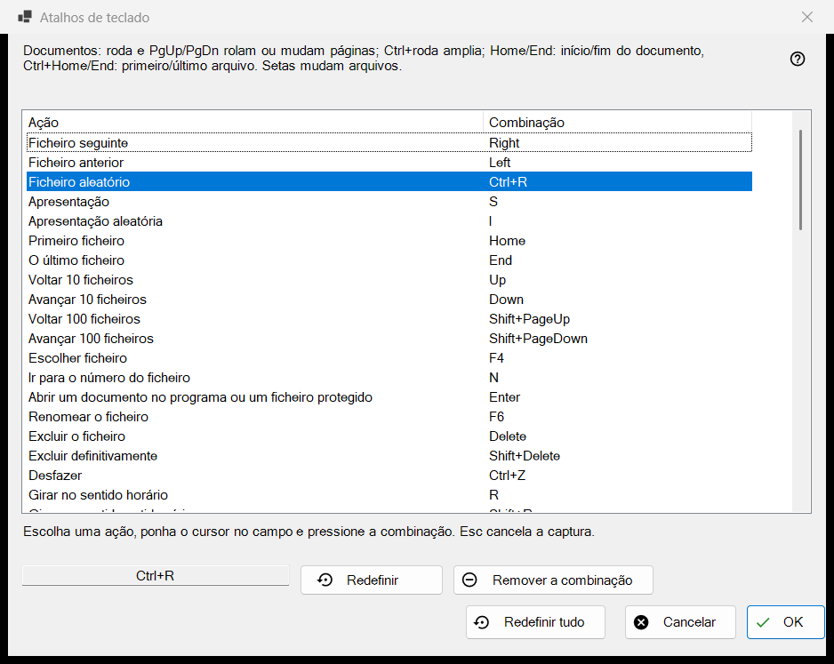
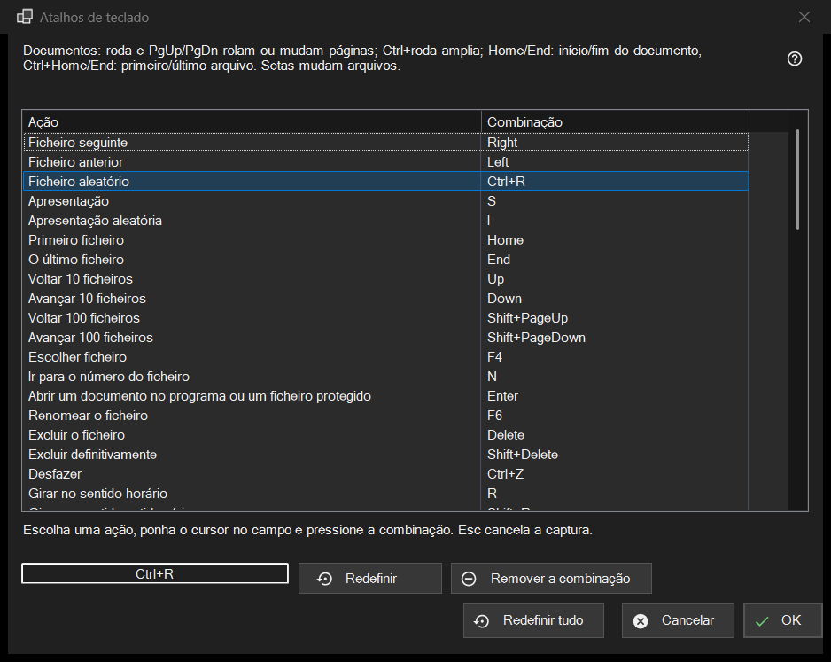

Atalhos de teclado
Finalidade
A lista de todas as ações do visualizador cuja tecla pode ser alterada, com a combinação a que respondem agora. Ela se abre em Configurações, página Arquivos e sistema, com o botão Configurar.. da linha Atalhos de teclado. A janela edita uma cópia: nada chega ao seu perfil até você pressionar OK.


Nesta ordem
- Abra as Configurações, vá para Arquivos e sistema e pressione Configurar.. na linha Atalhos de teclado.
- Selecione uma ação na lista.
- Clique no campo abaixo da lista e pressione a nova combinação.
- Se outra ação já a possui, escolha Trocar atalhos, Remover dessa ação ou Cancelar.
- Repita para outras ações; use Redefinir, Remover a combinação ou Redefinir tudo quando precisar.
- Pressione OK para manter as alterações, ou Cancelar para descartá-las todas.
Os elementos
A lista Ação e Combinação
Cada linha é uma ação com a sua combinação principal; uma ação sem tecla mostra Não atribuído. Os dez espaços de pasta aparecem como Mover para a pasta 1..0 e Copiar para a pasta 1..0 (as teclas de dígito movem, Shift mais um dígito da fileira superior copia). Algumas ações respondem também a teclas adicionais de fábrica (Arquivo seguinte também reage à barra de espaço e a PageDown). A lista mostra apenas a principal, mas assim que você dá à ação uma nova combinação, todas as suas antigas teclas de fábrica deixam de funcionar. O texto acima da lista indica as teclas fixas dos documentos (roda, PgUp/PgDn, Home/End, setas) que não estão na lista.
Gravar uma combinação
Selecione uma linha, depois clique no campo abaixo da lista (ou clique duas vezes na linha) e pressione as teclas, com Ctrl, Shift ou Alt se quiser. O campo grava a combinação inteira de uma vez, e um modificador sozinho não é uma combinação. Esc sai do campo sem gravar nada. A alteração aparece na lista imediatamente, mas ainda está apenas na cópia de trabalho.
Teclas que não podem ser atribuídas
F1, F10, F11, Esc, as teclas Windows, a tecla Menu, Alt+Tab, Alt+F4 e Ctrl+Alt+Delete pertencem ao Windows ou ao programa. Ao pressionar uma delas aparece: Esta combinação é reservada pelo sistema ou pelo programa e não pode ser atribuída. Nada muda.
Uma combinação que já está em uso
A pergunta nomeia o dono: A combinação X já pertence à outra ação. Trocar atalhos dá a essa ação a combinação que a atual tinha (possivelmente nenhuma). Remover dessa ação a deixa com Não atribuído e entrega a combinação a você. Cancelar não muda nada.
Redefinir, Remover a combinação e Redefinir tudo
Redefinir devolve a ação selecionada à sua tecla de fábrica. Remover a combinação deixa a ação sem nenhuma tecla, de modo que a sua tecla de fábrica também deixa de funcionar; use-o para desativar uma tecla. Redefinir tudo pergunta: Redefinir todas as combinações para os valores padrão? Restaurar padrões apaga todas as suas alterações na janela; Cancelar as mantém.
OK e Cancelar
OK grava todo o mapa no perfil e o visualizador passa a usá-lo na hora. Cancelar fecha a janela e deixa o perfil exatamente como estava. As teclas de vídeo e áudio (pausa, silenciar, volume, avanço, velocidade, quadro a quadro, faixas) atuam sobre a mídia em reprodução.